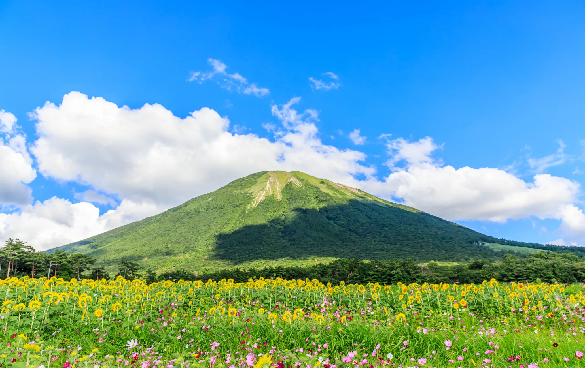

Japan Travel

Mount Daisen in winter
Mount Daisen (大山, Daisen) in Japan
ภูเขาลูกนี้สูง 1,729 เมตร
ภูเขาไฟฟูจิย่อยส่วน
ภูเขาไดเซน แปลว่า "ภูเขาลูกใหญ่"
For more information if you want
Japan travel
 Mount Daisen in winter
Mount Daisen in winter